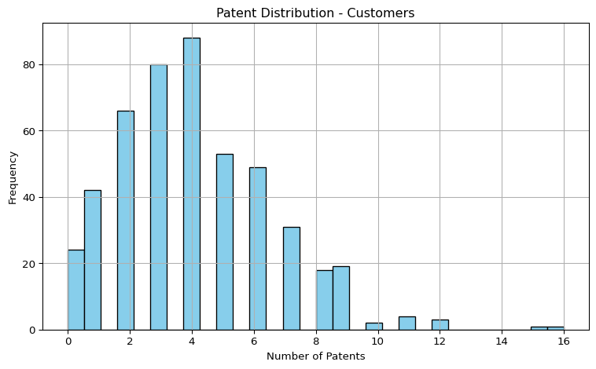
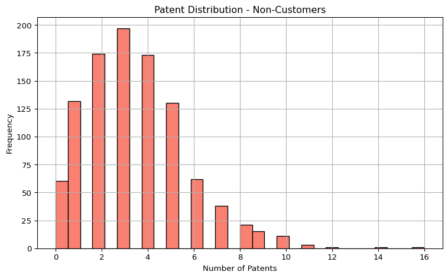
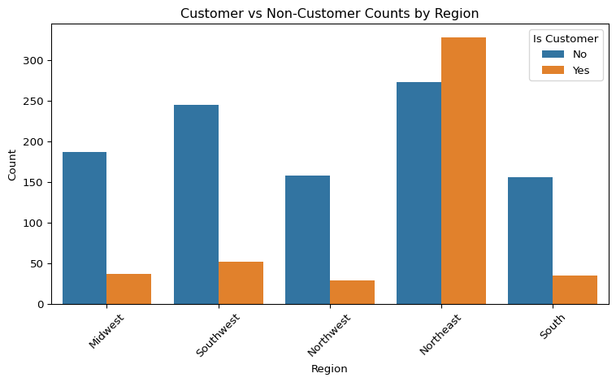
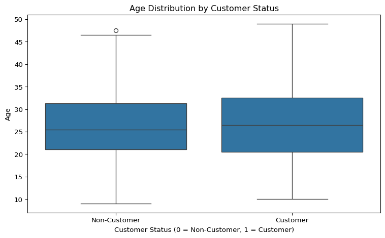
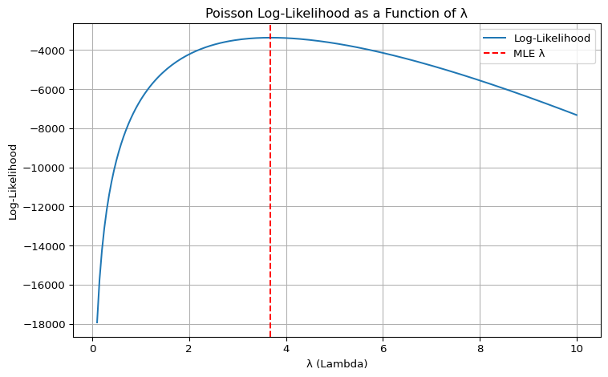
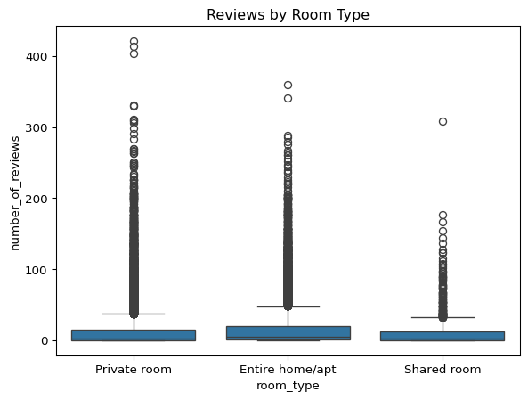
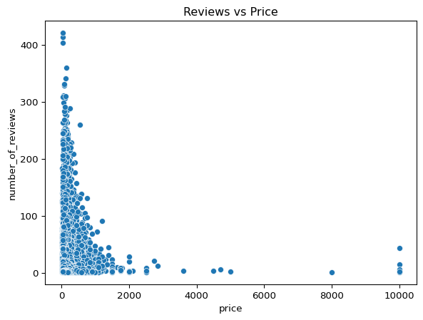

import pandas as pd
import matplotlib.pyplot as plt
import seaborn as sns
import numpy as np
from scipy.optimize import minimize_scalar
from scipy.optimize import minimize
from numpy.linalg import inv
import statsmodels.api as sm
import math
from scipy.special import gammalnPoisson Regression Examples
Blueprinty Case Study
Introduction
Blueprinty is a small firm that makes software for developing blueprints specifically for submitting patent applications to the US patent office. Their marketing team would like to make the claim that patent applicants using Blueprinty’s software are more successful in getting their patent applications approved. Ideal data to study such an effect might include the success rate of patent applications before using Blueprinty’s software and after using it. Unfortunately, such data is not available.
However, Blueprinty has collected data on 1,500 mature (non-startup) engineering firms. The data include each firm’s number of patents awarded over the last 5 years, regional location, age since incorporation, and whether or not the firm uses Blueprinty’s software. The marketing team would like to use this data to make the claim that firms using Blueprinty’s software are more successful in getting their patent applications approved.
Data
blueprint = pd.read_csv("/Users/kaistern/Documents/MGTA_Data/MGTA_Marketing_Analytics/quarto_website/blog/project2/blueprinty.csv")
airbnb = pd.read_csv("/Users/kaistern/Documents/MGTA_Data/MGTA_Marketing_Analytics/quarto_website/blog/project2/airbnb.csv")custs = blueprint[blueprint['iscustomer']==1]
non_custs = blueprint[blueprint['iscustomer']==0]
cust_mean = custs['patents'].mean()
non_cust_mean = non_custs['patents'].mean()
print(f'The mean number of patents for customers is {cust_mean} while the mean for non-patients is {non_cust_mean}')The mean number of patents for customers is 4.133056133056133 while the mean for non-patients is 3.4730127576054954plt.figure(figsize=(8, 5))
plt.hist(custs['patents'], bins=30, color='skyblue', edgecolor='black')
plt.title("Patent Distribution - Customers")
plt.xlabel("Number of Patents")
plt.ylabel("Frequency")
plt.grid(True)
plt.tight_layout()
plt.show()
plt.figure(figsize=(8, 5))
plt.hist(non_custs['patents'], bins=30, color='salmon', edgecolor='black')
plt.title("Patent Distribution - Non-Customers")
plt.xlabel("Number of Patents")
plt.ylabel("Frequency")
plt.grid(True)
plt.tight_layout()
plt.show()

The histograms show that both customers and non-customers have right-skewed distributions of patent counts, with most values concentrated below 6. Customers peak around 4 patents, while non-customers peak slightly lower, around 2–3. The mean number of patents is higher for customers (4.13) than for non-customers (3.47), suggesting that customers tend to be slightly more innovation-active. Despite a larger sample size among non-customers, the customer group shows a modest upward shift in patent ownership.
Blueprinty customers are not selected at random. It may be important to account for systematic differences in the age and regional location of customers vs non-customers.
plt.figure(figsize=(8, 5))
sns.countplot(data=blueprint, x='region', hue='iscustomer')
plt.title("Customer vs Non-Customer Counts by Region")
plt.xlabel("Region")
plt.ylabel("Count")
plt.xticks(rotation=45)
plt.legend(title="Is Customer", labels=["No", "Yes"])
plt.tight_layout()
plt.show()
The regional distribution of customers and non-customers is clearly imbalanced. The Northeast region stands out with more customers than non-customers, while all other regions have significantly fewer customers. This suggests that customer status is not randomly distributed across regions and regional factors may influence Blueprinty selection.
plt.figure(figsize=(8, 5))
sns.boxplot(data=blueprint, x='iscustomer', y='age')
plt.title("Age Distribution by Customer Status")
plt.xlabel("Customer Status (0 = Non-Customer, 1 = Customer)")
plt.ylabel("Age")
plt.xticks([0, 1], ['Non-Customer', 'Customer'])
plt.tight_layout()
plt.show()
The boxplot shows that customers tend to be slightly older than non-customers on average, with a modest upward shift in median age. Both groups have similar spreads and ranges, though customers show slightly higher values at the upper quartile. This indicates age may play a small but non-negligible role in customer selection.
Estimation of Simple Poisson Model
Since our outcome variable of interest can only be small integer values per a set unit of time, we can use a Poisson density to model the number of patents awarded to each engineering firm over the last 5 years. We start by estimating a simple Poisson model via Maximum Likelihood.
The likelihood function for independent observations ( Y_1, , Y_n (_i) ) is:
\[ \mathcal{L}(\beta) = \prod_{i=1}^n \frac{e^{-\lambda_i} \lambda_i^{Y_i}}{Y_i!} = \prod_{i=1}^n \frac{e^{-e^{X_i^\top \beta}} \left(e^{X_i^\top \beta}\right)^{Y_i}}{Y_i!} \]
Taking the log of the likelihood gives the log-likelihood:
\[ \ell(\beta) = \sum_{i=1}^n \left[ Y_i X_i^\top \beta - e^{X_i^\top \beta} - \log(Y_i!) \right] \]
I implement this function below in python.
def log_factorial(y):
return np.array([np.sum(np.log(np.arange(1, int(yi)+1))) if yi > 0 else 0 for yi in y])
def poisson_log_likelihood(lambd, y):
y = np.asarray(y)
n = len(y)
log_fact = log_factorial(y)
log_likelihood = -n * lambd + np.sum(y * np.log(lambd)) - np.sum(log_fact)
return log_likelihoodY = blueprint['patents'].values
lambda_vals = np.linspace(0.1, 10, 200)
log_likelihoods = [poisson_log_likelihood(lam, Y) for lam in lambda_vals]
plt.figure(figsize=(8, 5))
plt.plot(lambda_vals, log_likelihoods, label='Log-Likelihood')
plt.axvline(lambda_vals[np.argmax(log_likelihoods)], color='red', linestyle='--', label='MLE λ')
plt.title("Poisson Log-Likelihood as a Function of λ")
plt.xlabel("λ (Lambda)")
plt.ylabel("Log-Likelihood")
plt.legend()
plt.grid(True)
plt.tight_layout()
plt.show()
The log-likelihood curve rises sharply at low values of λ, peaks around the sample mean of patent counts (approximately 4), and then gradually declines reflecting the typical shape of a Poisson likelihood. The red dashed line marks the maximum likelihood estimate for λ, which corresponds to the value that best explains the observed data under the Poisson model.
Y = blueprint['patents'].values
objective = lambda lam: -poisson_log_likelihood(lam, Y)
result = minimize_scalar(objective, bounds=(0.01, 10), method='bounded')
mle_lambda = result.x
print(f"MLE for λ: {mle_lambda:.4f}")MLE for λ: 3.6847The MLE is 3.6847 which is aligns with the graphical output above and makes sense given our understanding of the data up to this point.
Estimation of Poisson Regression Model
Next, we extend our simple Poisson model to a Poisson Regression Model such that \(Y_i = \text{Poisson}(\lambda_i)\) where \(\lambda_i = \exp(X_i'\beta)\). The interpretation is that the success rate of patent awards is not constant across all firms (\(\lambda\)) but rather is a function of firm characteristics \(X_i\). Specifically, we will use the covariates age, age squared, region, and whether the firm is a customer of Blueprinty.
def poisson_regression_log_likelihood(beta, X, y):
beta = np.atleast_1d(beta)
X = np.asarray(X)
y = np.asarray(y)
eta = X @ beta
lambdas = np.array([math.exp(val) for val in eta])
log_fact = gammaln(y + 1) # log(y!) using gamma function
return np.sum(y * eta - lambdas - log_fact)def poisson_loglik(beta, X, y):
eta = X @ beta
return sum(y[i]*eta[i] - math.exp(min(eta[i], 700)) - gammaln(y[i]+1) for i in range(len(y)))def fit_poisson(df, y_col, features):
X = sm.add_constant(df[features]).values
y = df[y_col].values
neg_ll = lambda b: -poisson_loglik(b, X, y)
beta0 = np.zeros(X.shape[1])
res = minimize(neg_ll, beta0, method='Nelder-Mead')
if not res.success:
res = minimize(neg_ll, beta0, method='BFGS')
beta_hat = res.x
n = len(beta_hat)
eps = 1e-5
hess = np.zeros((n, n))
for i in range(n):
for j in range(i, n):
di, dj = np.zeros(n), np.zeros(n)
di[i], dj[j] = eps, eps
f = neg_ll(beta_hat)
f1 = neg_ll(beta_hat + di)
f2 = neg_ll(beta_hat + dj)
f12 = neg_ll(beta_hat + di + dj)
hess[i, j] = (f12 - f1 - f2 + f) / eps**2
hess[j, i] = hess[i, j]
try:
se = np.sqrt(np.diag(np.linalg.inv(hess)))
except:
se = np.full(n, np.nan)
summary = pd.DataFrame({'Coefficient': beta_hat, 'Std. Error': se}, index=sm.add_constant(df[features]).columns)
return {
'coefficients': beta_hat,
'std_errors': se,
'summary': summary,
'convergence': res.success,
'log_likelihood': -res.fun
}df = blueprint.copy()
df['age_squared'] = df['age'] ** 2
df = pd.get_dummies(df, columns=['region'], drop_first=True)
features = ['age', 'age_squared', 'iscustomer'] + [col for col in df.columns if col.startswith('region_')]
result = fit_poisson(df, 'patents', features)
print(result['summary']) Coefficient Std. Error
const -0.329507 0.179246
age 0.137006 0.013514
age_squared -0.002764 0.000249
iscustomer 0.214490 0.030893
region_Northeast -0.013539 0.043277
region_Northwest -0.053201 0.053562
region_South 0.022149 0.052401
region_Southwest 0.042996 0.046625features = ['age', 'age_squared', 'iscustomer'] + [col for col in df.columns if col.startswith('region_')]
X = sm.add_constant(df[features]).astype(float)
y = df['patents'].astype(float)
model = sm.GLM(y, X, family=sm.families.Poisson())
result_glm = model.fit()
print(result_glm.summary()) Generalized Linear Model Regression Results
==============================================================================
Dep. Variable: patents No. Observations: 1500
Model: GLM Df Residuals: 1492
Model Family: Poisson Df Model: 7
Link Function: Log Scale: 1.0000
Method: IRLS Log-Likelihood: -3258.1
Date: Wed, 28 May 2025 Deviance: 2143.3
Time: 09:00:46 Pearson chi2: 2.07e+03
No. Iterations: 5 Pseudo R-squ. (CS): 0.1360
Covariance Type: nonrobust
====================================================================================
coef std err z P>|z| [0.025 0.975]
------------------------------------------------------------------------------------
const -0.5089 0.183 -2.778 0.005 -0.868 -0.150
age 0.1486 0.014 10.716 0.000 0.121 0.176
age_squared -0.0030 0.000 -11.513 0.000 -0.003 -0.002
iscustomer 0.2076 0.031 6.719 0.000 0.147 0.268
region_Northeast 0.0292 0.044 0.669 0.504 -0.056 0.115
region_Northwest -0.0176 0.054 -0.327 0.744 -0.123 0.088
region_South 0.0566 0.053 1.074 0.283 -0.047 0.160
region_Southwest 0.0506 0.047 1.072 0.284 -0.042 0.143
====================================================================================The Poisson regression results suggest that age, age squared, and iscustomer status are significant predictors of the number of patents held, while regional differences are not statistically significant. Specifically, age has a positive coefficient (0.149), but the negative coefficient on age_squared (−0.003) indicates a concave relationship: the expected patent count increases with age at a decreasing rate. Being a customer is associated with a ~21% increase in expected patents (exp(0.208) ≈ 1.23), and this effect is highly significant. The intercept is also significant, while all regional indicators have large p-values (p > 0.28), suggesting no strong regional differences in patent counts after accounting for other variables. The pseudo R-squared (0.136) indicates a modest fit.
X_0 = X.copy()
X_1 = X.copy()
X_0['iscustomer'] = 0
X_1['iscustomer'] = 1
y_pred_0 = result_glm.predict(X_0)
y_pred_1 = result_glm.predict(X_1)
diff = y_pred_1 - y_pred_0
average_effect = diff.mean()
print(f"Average marginal effect of Blueprinty's software on expected patent count: {average_effect:.3f}")Average marginal effect of Blueprinty's software on expected patent count: 0.793On average, being a Blueprinty customer is associated with 0.793 more expected patents per firm, holding all other characteristics constant. This suggests a substantive positive impact of the software on firms’ innovation output, assuming the model is well-specified and the number of patents is a good outcome measure.
AirBnB Case Study
Introduction
AirBnB is a popular platform for booking short-term rentals. In March 2017, students Annika Awad, Evan Lebo, and Anna Linden scraped of 40,000 Airbnb listings from New York City. The data include the following variables:
df = airbnb.copy()
df['last_scraped'] = pd.to_datetime(df['last_scraped'])
df['host_since'] = pd.to_datetime(df['host_since'])
df['days'] = (df['last_scraped'] - df['host_since']).dt.days
vars_to_keep = ['days', 'room_type', 'bathrooms', 'bedrooms', 'price',
'number_of_reviews', 'review_scores_cleanliness',
'review_scores_location', 'review_scores_value', 'instant_bookable']
df = df.dropna(subset=vars_to_keep)
df['instant_bookable'] = (df['instant_bookable'] == 't').astype(int)
df = pd.get_dummies(df, columns=['room_type'], drop_first=True)sns.histplot(df['number_of_reviews'], bins=50)
plt.title("Distribution of Number of Reviews")
plt.show()
The histogram above shows that the majority of Airbnb listings have very few reviews, with a sharp right skew. Most units have fewer than 20 reviews, and a small number of listings have over 100, suggesting that a small subset of units receives a disproportionately high number of bookings (as proxied by reviews). This kind of distribution is typical in count data and justifies the use of a Poisson model for further analysis.
sns.boxplot(x='room_type', y='number_of_reviews', data=airbnb)
plt.title("Reviews by Room Type")
plt.show()
This boxplot shows the distribution of review counts across different room types. Entire homes/apartments and private rooms tend to receive more reviews on average than shared rooms, though all three room types have long upper tails indicating occasional listings with very high activity. The median number of reviews is relatively low across all categories, but shared rooms appear to have the fewest reviews overall, suggesting lower demand or usage compared to other room types.
sns.scatterplot(x='price', y='number_of_reviews', data=df)
plt.title("Reviews vs Price")
plt.show()
This scatterplot shows a strong negative relationship between price and number of reviews, suggesting that higher-priced listings tend to receive fewer bookings,as proxied by reviews. Most listings are clustered at lower price points with higher review counts, while units priced above ~$500 see a sharp drop-off in review volume. This indicates that guests may be more price-sensitive and that extremely high-priced units are rarely booked.
features = ['days', 'bathrooms', 'bedrooms', 'price',
'review_scores_cleanliness', 'review_scores_location', 'review_scores_value',
'instant_bookable',
'room_type_Private room', 'room_type_Shared room']
X = sm.add_constant(df[features]).astype('float')
y = df['number_of_reviews'].astype('float')
model = sm.GLM(y, X, family=sm.families.Poisson())
result = model.fit()
print(result.summary()) Generalized Linear Model Regression Results
==============================================================================
Dep. Variable: number_of_reviews No. Observations: 30140
Model: GLM Df Residuals: 30129
Model Family: Poisson Df Model: 10
Link Function: Log Scale: 1.0000
Method: IRLS Log-Likelihood: -4.9041e+05
Date: Wed, 28 May 2025 Deviance: 8.5945e+05
Time: 09:00:46 Pearson chi2: 1.18e+06
No. Iterations: 6 Pseudo R-squ. (CS): 0.9655
Covariance Type: nonrobust
=============================================================================================
coef std err z P>|z| [0.025 0.975]
---------------------------------------------------------------------------------------------
const 2.9427 0.017 176.920 0.000 2.910 2.975
days 0.0005 1.86e-06 280.430 0.000 0.001 0.001
bathrooms -0.1134 0.004 -30.067 0.000 -0.121 -0.106
bedrooms 0.0757 0.002 37.214 0.000 0.072 0.080
price -4.302e-05 8.27e-06 -5.199 0.000 -5.92e-05 -2.68e-05
review_scores_cleanliness 0.1110 0.002 73.159 0.000 0.108 0.114
review_scores_location -0.0815 0.002 -50.403 0.000 -0.085 -0.078
review_scores_value -0.0911 0.002 -49.311 0.000 -0.095 -0.087
instant_bookable 0.4591 0.003 157.293 0.000 0.453 0.465
room_type_Private room 0.0192 0.003 7.025 0.000 0.014 0.025
room_type_Shared room -0.1152 0.009 -13.318 0.000 -0.132 -0.098
=============================================================================================This Poisson regression model examines how various listing characteristics influence the number of reviews on Airbnb, used here as a proxy for bookings. The results indicate that listings active for a longer period (days) tend to accumulate more reviews, as expected. Larger listings, as measured by the number of bedrooms, are also associated with more bookings, while listings with more bathrooms are surprisingly linked to fewer reviews, possibly reflecting reduced demand for larger or more expensive properties. Price has a small but statistically significant negative effect, confirming that higher nightly rates are generally associated with fewer bookings.
Among review-based quality metrics, cleanliness stands out with a strong positive effect, indicating that guests reward cleaner properties with more bookings. Interestingly, higher scores for location and value are associated with fewer reviews, which may reflect unobserved factors. For example, budget properties in less central locations may be rated as better “value” but still attract fewer bookings overall. The ability to book instantly is associated with a substantial increase in review volume, suggesting that convenience is a major driver of guest behavior. Lastly, compared to entire homes, private rooms receive slightly more reviews, while shared rooms receive significantly fewer, highlighting differences in demand by room type.